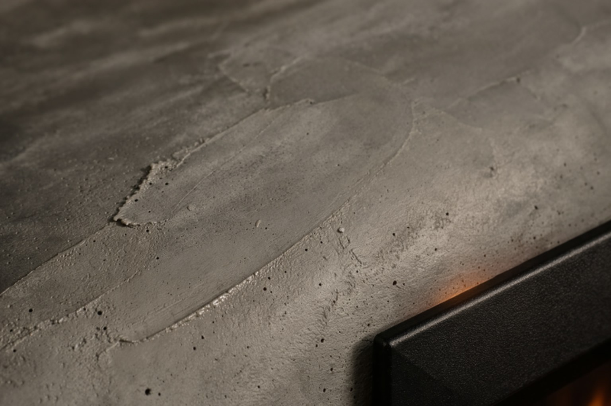
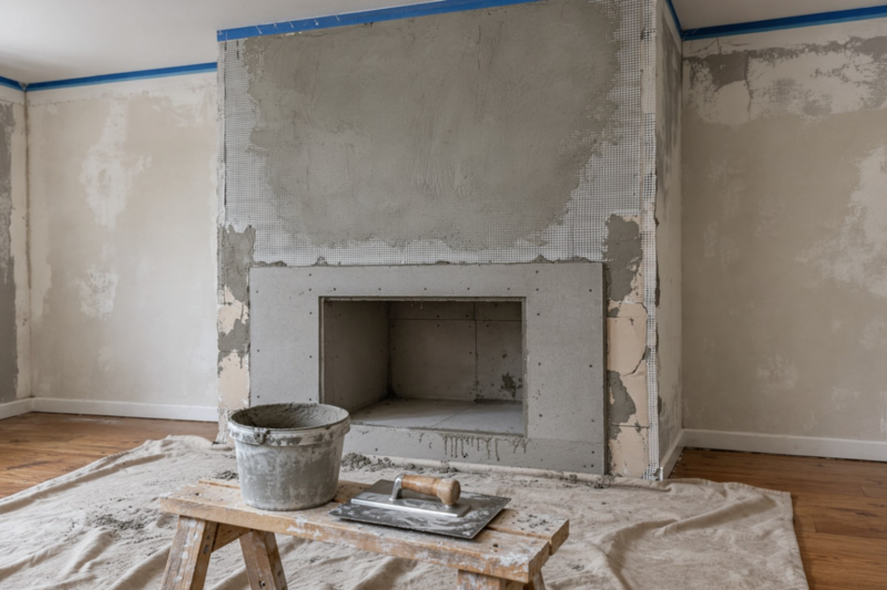
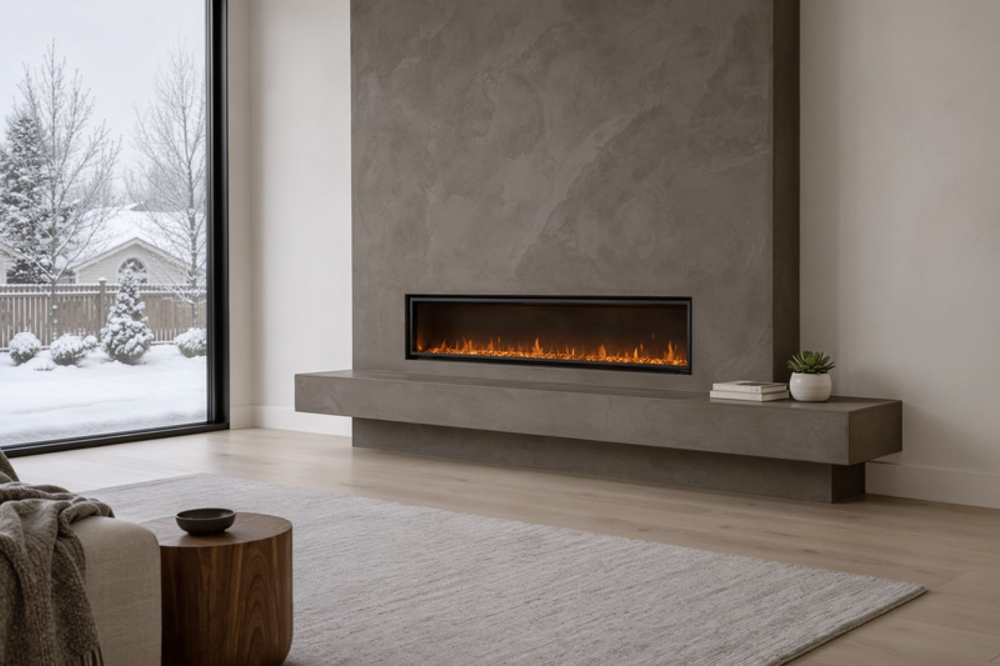

Most of the fireplace calls we get in the GTA start the same way. The house has a builder-grade gas fireplace from the 2000s with a strip of beige tile around it, or a brick chimney breast somebody painted white, and the owner has spent a winter looking at sculptural plaster fireplaces online. They want that: no grout, no joints, no mantel shelf, just one quiet surface with the fire in it.
The good news is that the look is achievable over what is already there. A microcement surround is applied at two to three millimetres over the existing tile, brick or drywall, so there is no tear-out, no dumpster and no rebuild. The less obvious news is that a fireplace is the one place in a house where the finish has to respect heat, and the contractors who ignore that are the reason you see cracked and discoloured plaster surrounds online. This article covers both sides.
Why Microcement Fireplace Surrounds Are the 2026 Living Room Move
Three things came together this year. Designers moved away from heavy stone and shiplap toward softer, monolithic forms: curved chimney breasts, arched openings and surrounds that read as one piece of material. Linear gas and electric fireboxes got longer and cheaper, which suits a wide, uninterrupted wall far better than a mantel does. And homeowners worked out that the finish in those photos is usually a cementitious plaster, not poured concrete, so it can go on over an existing wall in a few days.
Microcement delivers that look better than the alternatives in a Toronto house. Venetian plaster is beautiful but soft and hard to clean. Roman clay and limewash give you the texture but mark easily. Precast concrete gives you the mass but needs structural support. Microcement is hand-trowelled, so it carries the same movement and depth, but it cures to a hard, sealed surface that takes a damp cloth and does not care about a dog leaning on it. Our comparison of Venetian plaster versus microcement covers the difference in detail.
A fireplace surround is a small square-footage job with a very large visual footprint. It is the one place in the house where paying for the right finish and the right prep is cheap relative to how often you look at it.
Microcement Fireplace Heat Limits: What Can Sit Next to the Firebox
This is the section that matters most, so we will be exact. Microcement itself is a cement and fine-aggregate finish. It does not burn and it tolerates heat the way a cementitious render does. What has a temperature limit is the sealer, which is a water-based polyurethane or acrylic resin. Push that resin past its limit and it softens, yellows or hazes over, and the finish underneath it is no longer protected. The rules we work to:
- Electric fireplaces: no practical restriction. The surface around an electric insert barely warms, so microcement can run tight to the trim on all four sides and across the hearth.
- Direct-vent gas fireplaces: every unit ships with a manual that specifies a non-combustible zone around the opening and a maximum surface temperature for finishing materials. Microcement on a cement-board substrate satisfies the non-combustible requirement. We apply it up to the unit's finishing trim, keep combustible framing and mantels at the manufacturer's clearance, and on high-output units we specify a heat-rated sealer for the band closest to the glass. We read the manual for your model before we quote, not after.
- Wood-burning fireplaces: the zone immediately around the opening runs far hotter than any gas unit. We keep the microcement outside that band and let a steel return, a stone slip or the original firebrick carry it. The surround, chimney breast and hearth outside that band are fine.
- Hearths: microcement is a good hearth finish on gas and electric units. On a wood burner we treat the hearth as a hot zone and recommend stone or a steel plate for the first stretch in front of the opening.

Ask any contractor quoting a plaster fireplace one question: what is the maximum surface temperature of the sealer you are using, and what does the fireplace manual say the wall will reach? If they cannot answer both, the finish will be fine for a season or two and then the band above the glass will start to change colour. That is not a microcement failure. It is a sealer put somewhere it was never rated to go.
How a Seamless Fireplace Surround Is Built Over Tile, Brick or Drywall
The finish is the last two coats; the result lives or dies on everything under it. Here is the sequence on a typical job, whether it is a chimney breast in a Riverdale semi, a builder fireplace in Vaughan or a condo electric insert in Mississauga.
- Assess what is there. Tile and brick must be bonded and sound. We tap for hollow tile and check the brick for loose mortar. Painted drywall is fine if the paint is adhered. Anything loose comes off; the rest stays.
- Confirm the substrate at the hot zone. Around a gas firebox we want cement board, not paper-faced drywall, in the manufacturer’s non-combustible zone. If the builder used drywall there, we cut it back and replace it. This is the single most common correction we make on 2000s-era fireplaces.
- Level and fill. Deep grout joints, raked brick mortar and the step between tile and drywall are filled with a cementitious levelling compound so the surround is one plane. Skip this and the pattern underneath telegraphs through within a month.
- Prime and mesh. A bonding primer goes on, then a fibreglass mesh is embedded in the first base coat. The mesh is what lets the finish bridge the joint between the old tile and the new cement board, and between the chimney breast and the adjacent wall, without cracking as the materials expand at different rates in the heat.
- Base coats. Two coats of coarse microcement, each sanded, to build the body of the surface and lock in the plane.
- Finish coats. Two coats of fine microcement, hand-trowelled. This is where the texture, the shadowing and the colour depth come from. The trowel direction is chosen for how the room’s light hits the wall, because a fireplace wall is almost always side-lit by a window.
- Seal. Primer-sealer, then two coats of the topcoat, in matte or satin. A heat-rated topcoat on the band nearest the opening where the unit calls for it. The sealer needs a few days to reach full hardness before the fireplace runs at full output.

A surround alone takes three to four days including cure time between coats; a full-height wall with a hearth bench runs five to seven. The fireplace can usually run at low output 72 hours after sealing and at full output after a week. If the unit is being replaced at the same time, it goes in first and the microcement is finished to its trim, which gives a far cleaner line than cutting into a finished wall afterwards.
Microcement Fireplace Surround Cost in Toronto (2026)
Fireplace work is priced by the scope of the surface rather than purely by the square foot, because the prep, masking and detailing around the opening are a fixed cost whether the wall is 40 or 120 square feet. The ranges below are typical for Toronto and the GTA in 2026 and include prep, levelling, mesh, base and finish coats and sealing. The fireplace unit, any gas or electrical work and new framing for a built-out chimney breast are separate.
| Scope | Installed Cost (GTA, 2026) | Typical Timeline |
|---|---|---|
| Surround or chimney breast only, over existing finish | $1,400 – $2,800 | 3 – 4 days |
| Full-height wall, floor to ceiling, around a linear fireplace | $2,600 – $4,800 | 4 – 6 days |
| Full wall plus hearth bench or raised hearth | $4,200 – $7,500 | 5 – 7 days |
| Wall wrapping onto an adjacent wall or ceiling | $5,500 – $9,500 | 6 – 8 days |
| Levelling allowance over deep brick or heavy tile | + $300 – $900 | Adds about a day |
| Cement board replacement in the hot zone | + $250 – $600 | Same visit |
For context, a comparable full-height surround in porcelain or natural stone slab in the GTA typically lands at $6,000 to $14,000 once fabrication and installation are counted, and it comes with joints. Microcement is not the cheapest finish you can put on a fireplace; paint and a new tile strip will always undercut it. It is the least expensive way to get a monolithic, joint-free surround, and because it is built over the existing wall there is no demolition line on the invoice. Our guide to microcement over tile explains why covering the old finish beats removing it.
Fireplace walls get hit with two kinds of light: cold daylight from the side and warm flame light from the centre. A mid-tone warm grey or greige reads correctly under both. Very pale colours wash out next to the flame and very dark charcoals show every fingerprint and ash smudge. If you want dark, choose a satin topcoat so it wipes clean.

Where We Tell Homeowners Not to Do It
- A chimney breast that is moving. If the brick is cracked through, the mortar is sandy or there is a diagonal crack running up the breast, the masonry needs repair first. A flexible finish hides movement for a season and then cracks along the same line. We fix the brick, then plaster it.
- An open wood-burning fireplace with no surround trim. If the opening has nothing but brick and you want the plaster to run right to the fire, the honest answer is that it should not. A steel or stone return at the opening solves it and looks intentional.
- Direct contact with a stove pipe or flue collar. Microcement is a wall finish, not a heat shield. The area around a wood stove’s pipe follows the stove manufacturer’s clearance table, full stop.
- Active moisture in the chimney. Efflorescence or damp staining on a chimney breast means water is getting in from above. Seal the chimney cap and flashing first or the finish will blister from behind.
None of these are reasons to give up on the look, only reasons to do the work in the right order. Most GTA fireplaces pass every check and the job is a straightforward four-day install.
Where We Work
Artisan Coat installs microcement fireplace surrounds, feature walls, floors and bathrooms across Toronto, Mississauga, Brampton, Vaughan, Oakville, Etobicoke, North York, Scarborough, Richmond Hill, Markham, Burlington, Milton, Caledon, Hamilton and the surrounding GTA. Interior microcement is a year-round service, so a fireplace wall booked in December is finished long before the season is over. Every project is covered by our written warranty, and the same crew handles prep, application and sealing. See the full range of our interior and exterior services.
The Short Version
A microcement fireplace surround gives a Toronto living room the seamless plaster look of 2026 without tearing out the existing tile, brick or drywall. It is applied at two to three millimetres over a levelled, primed and meshed substrate, with cement board in the hot zone around a gas firebox and a heat-rated sealer where the manual calls for it. On a wood burner the finish stops outside the hottest band and a steel or stone return takes over.
In the GTA in 2026, a surround or chimney breast runs $1,400 to $2,800, a full-height wall $2,600 to $4,800, and a wall with a hearth bench $4,200 to $7,500. Three to seven days, no demolition, and a surface that wipes clean and does not go out of style when the next tile trend arrives.